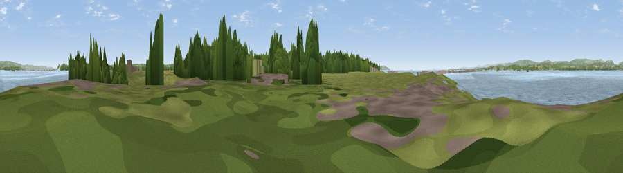

Viewpoint near Redwick
#30433 in England · top 59% of its area beats it · near RedwickThe view, rendered

A 360° render of this exact spot computed from the terrain model, tree cover and land cover — summer colours, afternoon light, calibrated against photographs of famous viewpoints. Real trees, hedges and buildings will differ in detail.
The panorama
Grey silhouette: terrain skyline in each direction (720 bearings, Earth curvature and refraction included). Dashed green: skyline with trees (+15 m) and buildings (+8 m) as obstacles. Blue strip: how far the ground is visible on each bearing.
Where the view opens
Wedge length = distance to the farthest visible ground on that bearing (vegetation-aware). Rings at 10, 25 and 50 km.
What fills the view
71% water · 13% woodland · 11% grassland · 3% built-up · 1% cropland · 1% wetland
Angular shares of the visible panorama (visual magnitude), not map area. Landscape diversity 0.42 (0–1 Shannon).
Key numbers
More beautiful places nearby
The staircase of upgrades: each row has a higher view potential than everything closer. Driving times are estimates from straight-line distance, calibrated against real road routing — check an actual route before setting out.
| Place | Direction | Drive | Score |
|---|---|---|---|
| Viewpoint near Aust | NE · 4 km | ~10 min | 60.1 |
| Viewpoint near Almondsbury | ESE · 6 km | ~13 min | 68.3 |
| Viewpoint near Hewelsfield | NNE · 15 km | ~27 min | 69.6 |
| Viewpoint near Hewelsfield | NNE · 15 km | ~27 min | 70.7 |
| Viewpoint near Tickenham | SSW · 17 km | ~29 min | 72.1 |
| Dundry Hill | S · 20 km | ~33 min | 72.4 |
| Dial Hill | SW · 20 km | ~34 min | 74.9 |
| Viewpoint near North Nibley | ENE · 22 km | ~37 min | 76.3 |
51.57470, -2.66065 · source: osm viewpoint · position refined by local search. Computed location — check access rights before visiting.